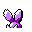

#032
Nidoran♂
Poison
Base stats Total 233
HP46
Attack57
Defense40
Speed50
Special40
Details
- Catch rate
- 235
- Base exp
- 60
- Growth
- Medium Slow
Level-up moves
LevelMoveType
StartLeerNormal
StartTackleNormal
Lv 8Peck
Lv 9Poison StingPoison
Lv 15Focus EnergyNormal
Lv 25AcidPoison
Lv 27Horn AttackNormal
Lv 36ToxicPoison
Lv 38Sludge BombPoison
Evolution
TM / HM
TM06 ToxicTM08 Body SlamTM09 Take DownTM10 Double-EdgeTM13 Ice BeamTM14 BlizzardTM18 CounterTM24 ThunderboltTM25 ThunderTM28 DigTM31 MimicTM32 Double TeamTM33 ReflectTM34 BideTM40 Sludge BombTM44 RestTM50 SubstituteHM01 CutHM04 Strength